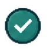

Point-of-Need Design
Performance Support
Performance support is where my instructional design work expands into performance consulting. I diagnose what is getting in the way of the work, decide whether training is actually the answer, and build point-of-need resources, tools, systems, and enablement that make the task easier to perform.
Enablement ToolsJob AidsDashboardsReference Systems
Performance consulting lens
Start with the performance gap, not the deliverable.
As an L&D specialist, I have learned to separate a knowledge problem from an access, process, environment, confidence, or workflow problem. That keeps me from prescribing training when the better intervention is a tool, clearer ownership, a reference system, or a change to the work itself.

ChooseLearning, support, process, or a combination?Support usability + governance
Design the resource so people can find it, trust it, and keep using it.
Once performance support is the right intervention, the design challenge shifts to access, scanability, source reliability, and maintenance. A useful resource has to work in the moment and stay trustworthy after launch.
Access
Put the resource where the work already happens.
Performance support loses value when people have to remember where it lives. I reduce searching by placing links, references, and entry points in the workflow they already use.
Design questionWhere will someone look first while doing the task?What I checkEntry points, labels, permissions, navigation, and device context.
Formats in the system
Different support for different kinds of work.
These are not interchangeable deliverables. Each one solves a different access, decision, or maintenance problem.
Enablement tools + job aids
Checklists, decision prompts, talk tracks, and quick-reference aids used during a live task.
Dashboards
Status, completion, exception, and follow-up views that make action visible without another course.
Guides + one-pagers
Downloadable or browser-based reference guides, one-pagers, and concise takeaway documents.
Slide decks
Facilitator, manager, or seller decks that support a conversation and point to maintained resources.
Repositories
Searchable collections linked to formal learning so deeper detail stays current outside the course.
Program support
Resources connected to larger programs, from launch learning and certification to reinforcement and manager follow-up.